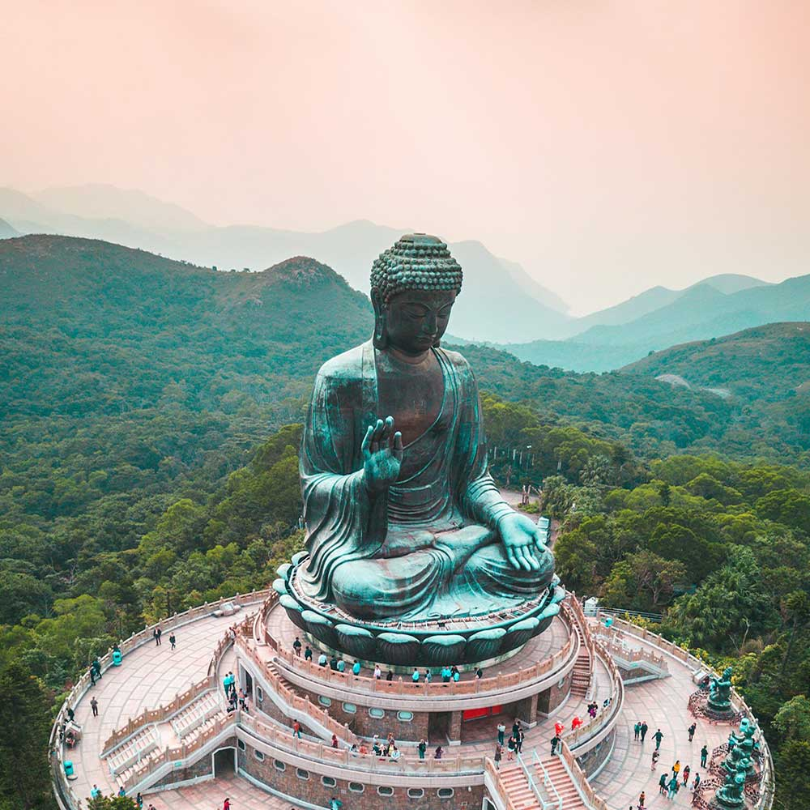
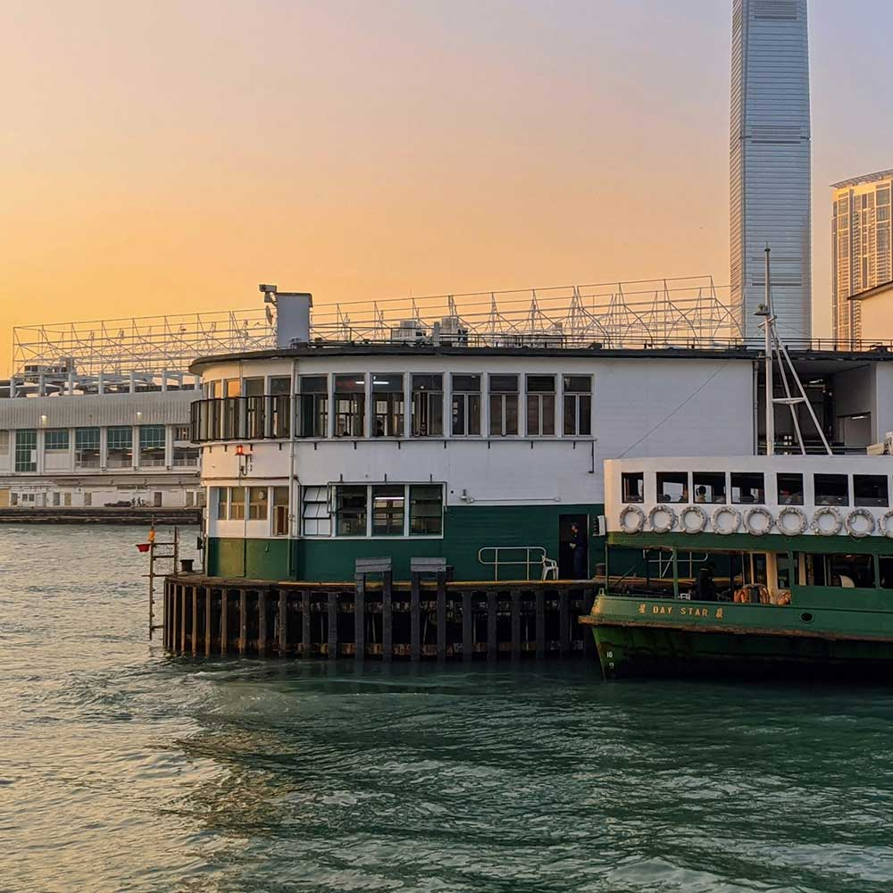
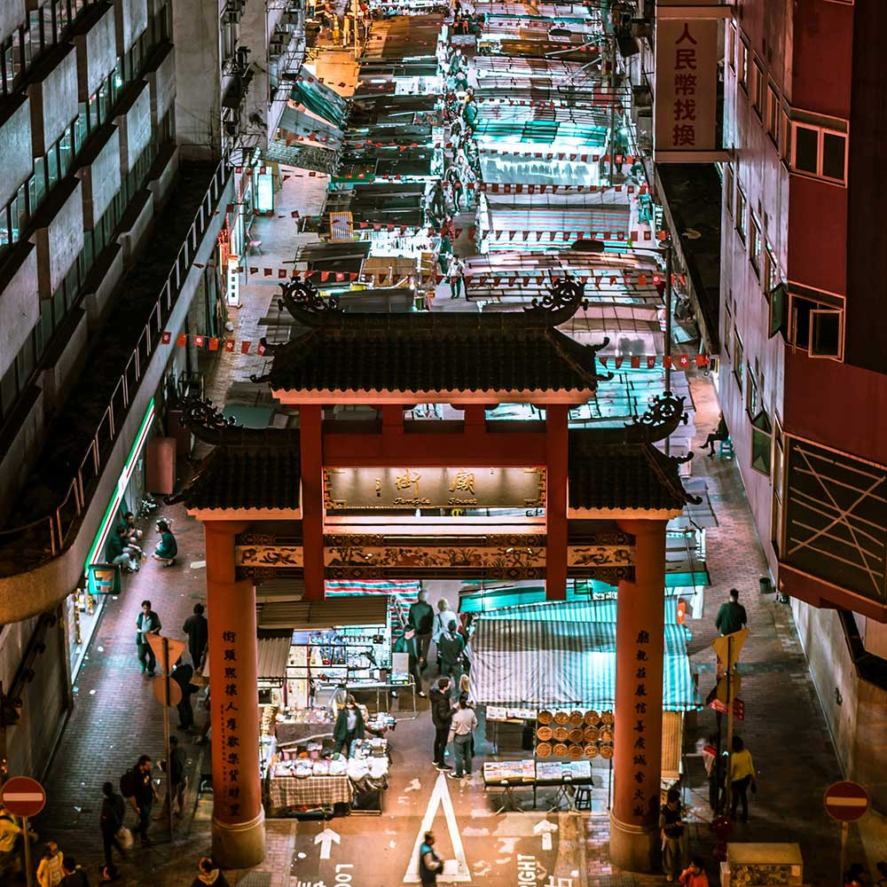

Hong Kong's highest point offering panoramic views of the skyline and harbor. Once an exclusive residential area for British elites in colonial times, it's now a must-visit for tourists via the historic Peak Tram, opened in 1888.

Big Buddha
Located on Lantau Island, this massive bronze Buddha statue was completed in 1993. It symbolizes harmony between man and nature, and draws visitors with its peaceful setting.

Star Ferry
A historic passenger boat service crossing Victoria Harbour. Once the main transport link between Kowloon and Hong Kong Island, it remains a scenic, nostalgic way to experience the city's iconic skyline.

Temple Street Night Market
A bustling market in Kowloon that dates back to the 1920s and comes alive at night with street food, trinkets, and fortune tellers. It captures the spirit of old Hong Kong with its blend of commerce, culture, and chaos.